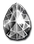

☰
HEYDAY
Database
League
Guide
Patch notes
Discord
/
Download
Database
/
Uniques
/ King's Jewel
Heyday
King's Jewel
Jewel
Required Level: 48
+1 to All Skills
+25% to All Resistances
+X% Chance Items Roll Magic or Better (X = 0.25 x character level)
Unique Jewel
King's Jewel
Type
Jewel
Base
Jewel
Required level
48
Item level
48
Other unique Jewels

Spring Facet
level 49
Winter Facet
level 49
Summer Facet
level 49
Autumn Facet
level 49
Thunder Facet
level 49
Rime Facet
level 49
Burnt Facet
level 49
Toxic Facet
level 49
Tiger Eye
level 58
Jade Facet
level 58
Topaz Facet
level 49
Emerald Facet
level 38